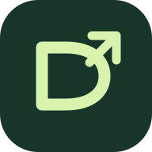

Clear your mind.
Tasks, boards and calendars that work together.

dayvup.Open workspace ↗Dayvup is your personal productivity workspace. Capture ideas, organize tasks and turn small moments of focus into meaningful progress.
✓ Make a little progress
○ Learn something new
○ Take a real break
Tasks, boards and calendars that work together.
Intentional sessions, without the noise.
Small wins, honest insights, lasting habits.
Plan projects, prioritize work, set deadlines and switch between task lists and Kanban boards.
Capture ideas in a Markdown editor and organize them into personal spaces.
Start intentional focus sessions, take breaks and listen to ambient sound.
Track your daily habits, study time, streaks and progress over time.
Earn XP, unlock achievements and share a progress card when you reach a milestone.
Work locally, export a backup or sign in for cloud synchronization when configured.
Dayvup combines a task planner, notes, focus timer, habits and productivity insights in a personal workspace.
No. You can use the workspace on your device and sign in when you want cloud sync.
Yes. Dayvup is the new name of StudyFlow. Existing accounts and Classic mode remain supported.